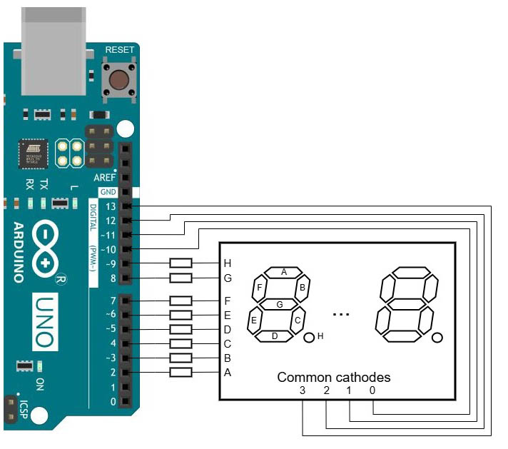

После долгого изучения в предыдущих этюдах (первый, второй, третий, четвёртый) вопроса о том, как правильно мигать светодиодом, наконец кое-что стало понятным и можно сделать что-то чуть более практичное. В этом этюде сделаем минималистичный счётчик секунд с четырёхразрядным индикатором. Регулярные прерывания, вызываемые встроенным в микроконтроллер Arduino 16-разрядным таймером, послужат основой как для динамической индикации, так и для измерения времени.
Сделать счётчик секунд с динамической индикацией, для которого можно с компьютера задавать начальное значение и направление счёта.
Таймер настроен на возбуждение прерывания каждые 2 мс. Обработчик прерывания выполняет одно короткое действие: устанавливает флаг. В основном цикле непрерывно проверяют состояние флага, и если флаг установлен, то (1) его сбрасывают; (2) сдвигают активный разряд индикатора; (3) увеличивают на 1 значение счётчика прерываний. Как только это значение достигнет 500, на что требуется одна секунда, счётчик сбрасывают и изменяют на 1 число на индикаторе.
Настройка таймера выполняется в функции setup: таймер переводится в режим CTC, задаётся коэффициент деления предделителя и число, записывемое в компаратор, разрешается прерывание по совпадению значения в счётчике со значением в компараторе (принципы настройки описаны в этом этюде). Обработчик прерывания ISR(TIMER1_COMPA_vect) устанавливает флаг требования перехода к следующему разряду в динамической индикации. В основном цикле loop флаг проверяют, а обнаружив, что он установлен, — сбрасывают, зажигают нужную цифру в следующем разряде индикатора и гасят текущий разряд.
Прерывания следуют регулярно с заданной частотой. В основном цикле loop считают их количество, по нему определяют, что прошла одна секунда, и тогда к отображаемому числу добавляют 1 или -1 в зависимости от направления счёта, заданного командой m=значение (m=0 для счёта с увеличением, m=1 для счёта с уменьшением). Отображаемое число хранится в буфере — массиве dataToDisplay из четырёх байтов, каждый из которых хранит одну цифру числа. Меняет цифры в буфере функция updateDataToDisplay.
После запуска программы на индикаторе отображается число 1234 и начинается счёт секунд с увеличением. Командой v=значение в любой момент можно вывести на индикатор произвольное число от 0 до 9999, и счёт секунд продолжится с него. Командой m=значение в любой момент можно задать направление счёта. Остановка счёта не предусмотрена.

Команда ?= выведет общую информацию о программе и командах. Команда ?=команда выведет информацию о конкретной команде.
Текст программы содержится в файле Ind_y_Ardu.ino, который можно получить с Github по ссылке.
Как вариант, для получения файла можно взять с Github весь репозиторий цикла "Ардуино и индикаторы" и выполнить команду git restore -s SecCount -- Ind_y_Ardu.ino